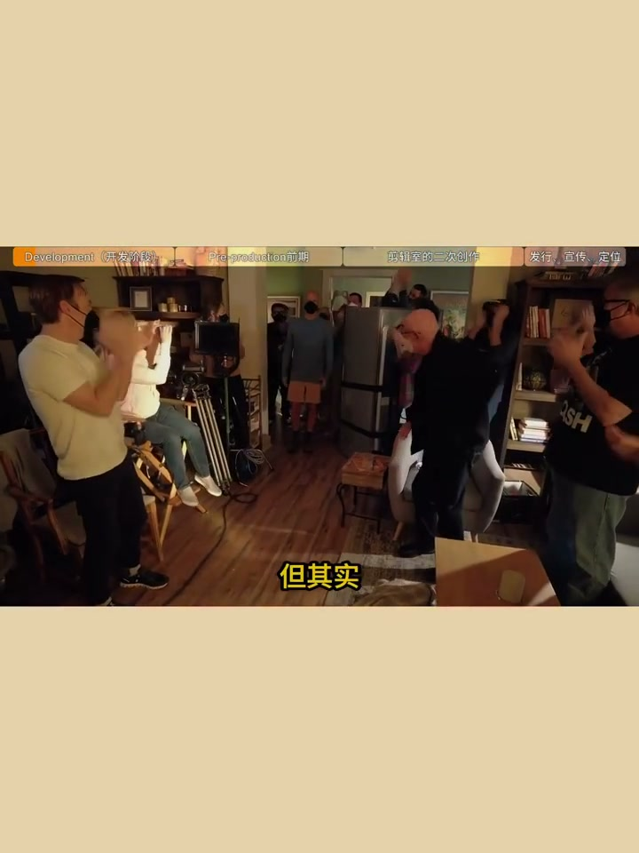
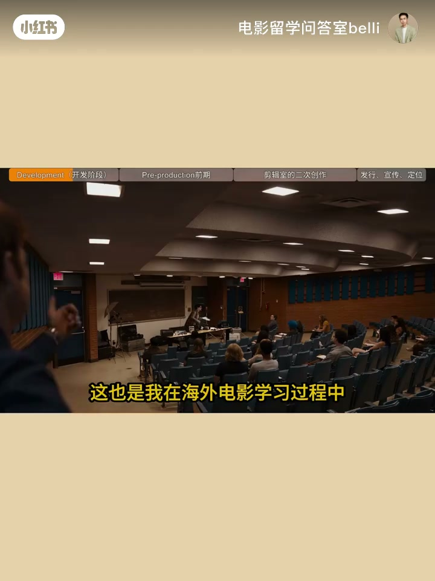
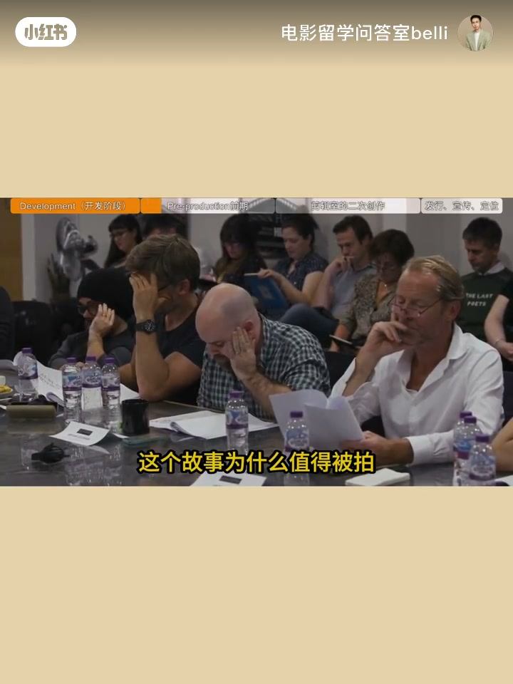
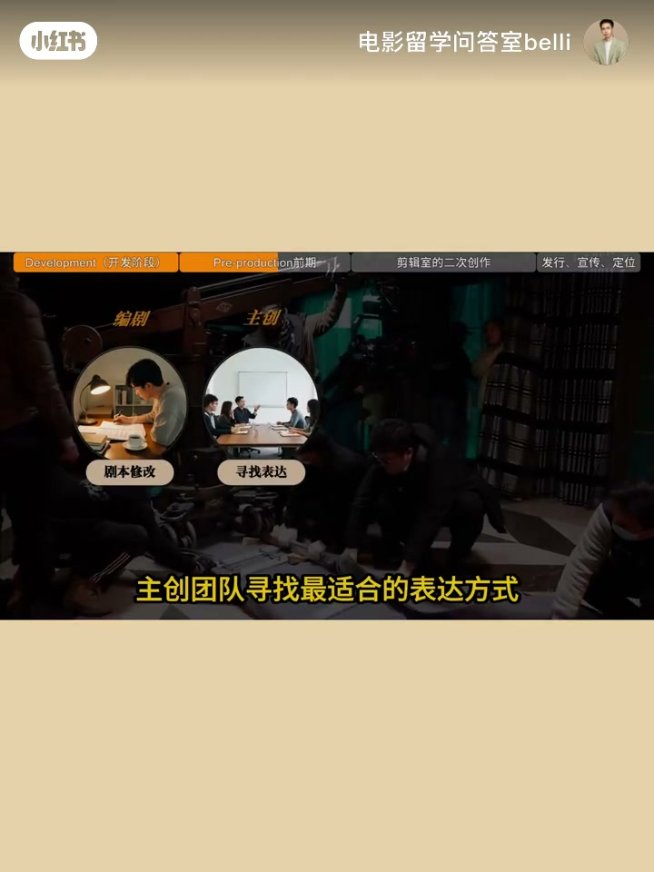
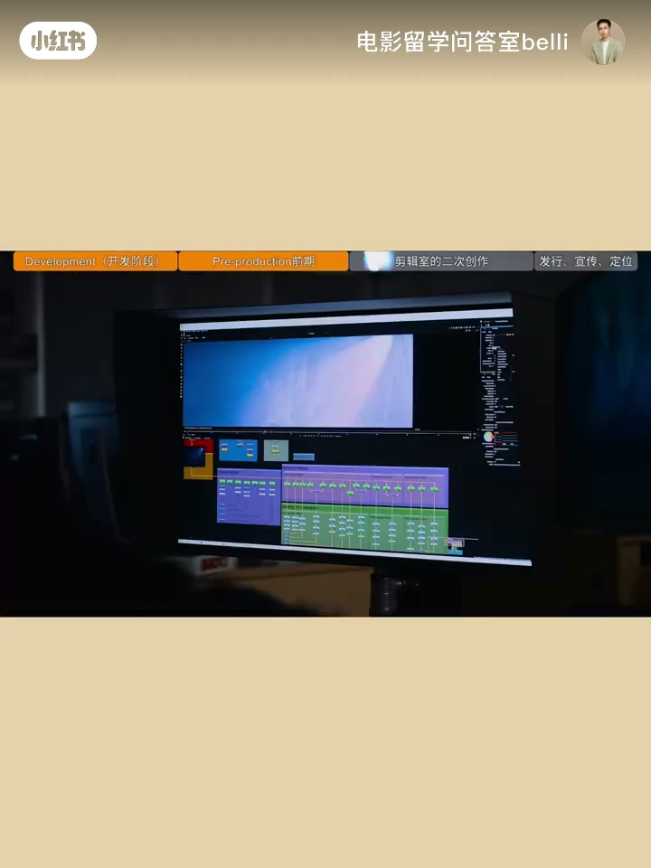
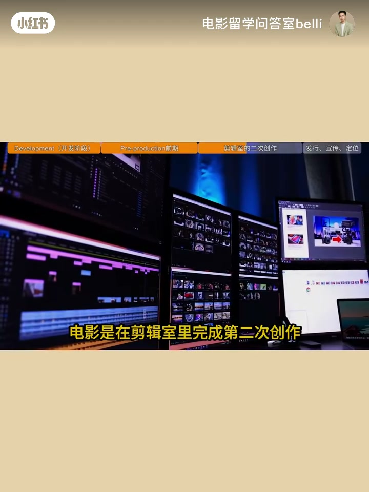
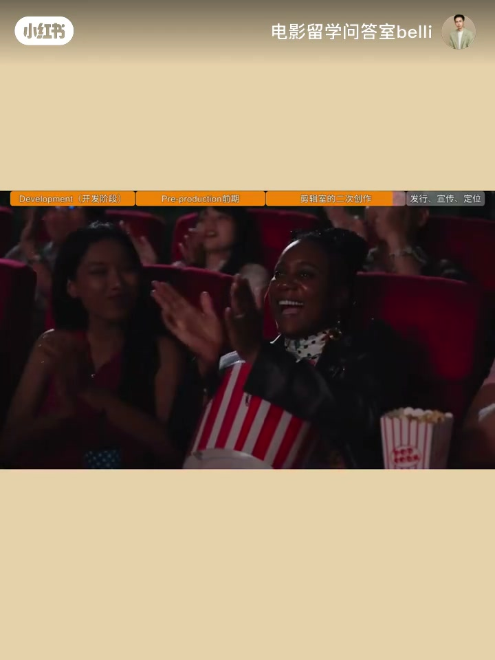
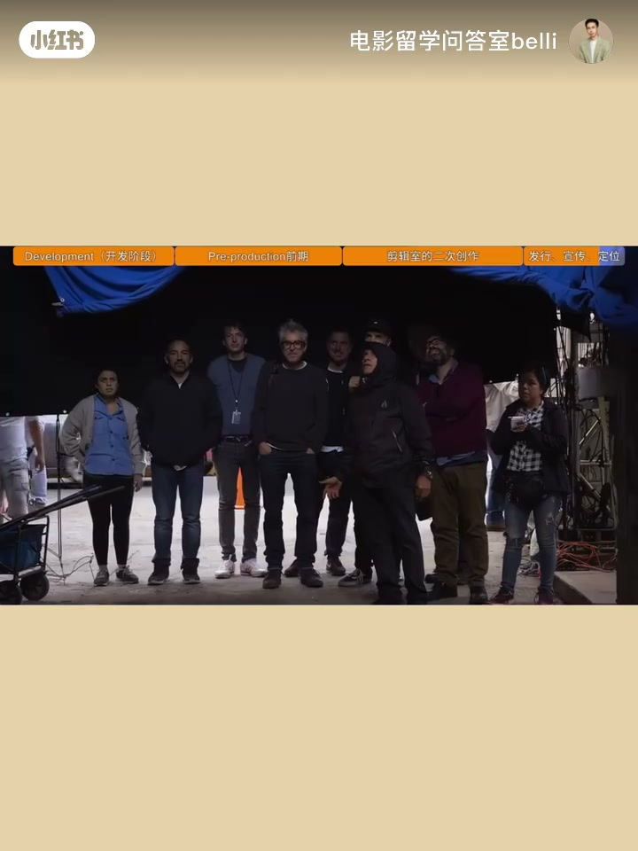

内容要点
黄金10集⑥：导演喊杀青只是进入战场的开始。海外训练既教镜头，也教创意如何变成完整项目——从为什么拍、给谁看、规模与市场，到剪辑室第二次创作与发行触达。
知识结构
拍完不等于成为真正的电影；艺术+工业系统。
为什么拍、观众、规模、市场；剧本/预算/视觉方案。
团队把纸面变现实；剪辑重组时间与情绪。
触达观众才算完成；多工种共同形成电影。
灵感只是起点；电影是一群人用专业把想法变成现实，并与观众连接。
00:00–00:30杀青≠完成
很多人以为喊杀青电影就完成了；其实那是真正进入战场的开始。拍摄完成并不自动等于一部「真正的电影」——电影是艺术，也是复杂工业系统。


00:30–01:05前期：灵感之后的问题
行业会先问：为什么值得拍、面对谁、什么规模、市场能否接受。灵感只是起点。开拍前有大量看不见的工作：改剧本、找表达、评估预算资源、导演视觉方案——许多优秀电影在摄影机打开前已完成一半创作。
「很多优秀电影其实在摄影机打开之前就已经完成了一半的创作。」


01:05–01:35拍摄与剪辑二次创作
拍摄阶段：导演、演员、美术、摄影、声音把纸面变成现实。之后并未停止创造——剪辑重组时间与情绪：镜头放哪、停顿多久、声音何时出现，都会改变观众看到的电影。拍摄是素材，剪辑决定电影。


01:35–02:10发行：与观众连接
还要面对如何被看见：发行、定位、宣传。拍出来只完成创作一部分；与观众连接时才真正完成。体系里：导演提问、编剧造故事、演员赋生命、制作让想象落地——电影不是一个人的灵感。


完整转录（66段）
Whisper medium · 中文 · 已做术语校正，仍可能有识别误差。
大家好,我是阿布
很多人以为导演喊杀青的那一天电影就完成了
但其实那只是电影真正进入战场的开始
一部电影从来不是拍完就结束
甚至很多时候拍摄完成
并不代表它已经成为一部真正的电影
因为电影不仅是一门艺术
它同时也是一个复杂的工业系统
这也是我在海外电影学习过程中一个很深的感受
电影学院不会只告诉你如何拍一个镜头
它也会训练你理解一个创意
如何最终变成一个完整的电影项目
比如一个导演突然产生了一个故事想法
很多人会认为很好,那马上找演员拍就行
但真正的电影行业会先问很多问题
这个故事为什么值得被拍
它面对什么样的观众
它需要什么样的制作规模
它有没有可能被市场接受
因为电影从来不是只有灵感
灵感只是起点
一个电影项目真正开始之前
需要经历大量看不见的工作
剧本不断修改
主创团队寻找最适合的表达方式
制片人评估预算和资源
导演建立自己的视觉方案
很多优秀电影
其实在摄影机打开之前
就已经完成了一半的创作
到了拍摄阶段
导演、演员、美术、摄影、声音团队
才真正把纸面上的故事变成现实
但拍摄结束以后
电影并没有停止创造
因为进入后期阶段
剪辑师会重新组织时间和情绪
一个镜头放在哪里
一个停顿持续多久
一段声音什么时候出现
都会改变观众最终看到的电影
所以很多导演都会说
电影是在剪辑室里完成第二次创作
因为拍摄记录的是素材
但剪辑决定的是电影
最后
一部电影还需要面对另一个现实
它如何被观众看到
电影发行、市场定位、宣传策略
都会影响它最终如何进入公众视野
一部电影拍出来
只是完成了创作的一部分
它真正完成
是当它和观众产生连接的时候
所以电影即使是一种艺术表达
也是一套完整的创作体系
导演负责提出问题
编剧创造故事
演员赋予人物生命
制作团队让想象成为现实
最终所有人的选择
才共同形成一部电影
所以
电影不是一个人的灵感
它是一群人
用专业把一个想法变成现实